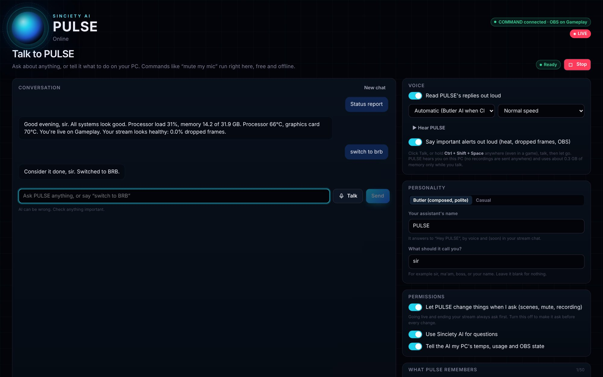

Your AI co-pilot
Give it a name, talk to it, and let it run your setup. Sinciety AI gives status reports, switches scenes, mutes your mic and saves clips, and it always asks before anything big. Ask-it-anything conversation is rolling out next.
Free download for Windows 10 and 11. Windows warning when installing?

Talk like you would to a person
Hold Ctrl + Shift + Space anywhere, even mid-game, and speak. It hears you on your own PC (your voice is never recorded or sent anywhere) and answers out loud.
What it does today
Every feature below is labelled honestly: what works now, what's rolling out next, and what platforms don't allow.
Your own assistant
Name it anything. Pick a composed butler style or casual, and what it calls you. Choose its voice and speed.
Hands-free
Just say “Hey (its name)”. A tiny on-PC model listens for its name only while someone is talking, then you can follow up without the name. Or hold Ctrl + Shift + Space. Nothing is recorded or sent.
PC technician
“Prepare my stream” checks OBS, a muted or missing mic, game audio, your scene, load, temps and disk space. “Why is my PC slow?” names what's hogging it. It never closes anything itself.
Mini assistant
A small always-on-top bubble you can drag over your game or OBS, with Talk and Stop.
Keeps chat going
When chat goes quiet while you're live, it suggests (or asks) a light question, never repeating itself. Plus chat polls that count the votes.
Runs your setup
Through Sinciety COMMAND: switch scenes, mute or unmute, start and stop recording, save clips in Clipciety, read temps and stream health.
Safe by design
Going live or ending a stream always waits for your yes. Every action is logged, there's a Stop button, and messages from chat can't give it orders.
Spoken alerts
It tells you out loud when your PC runs hot, your stream starts dropping frames, or OBS disconnects.
Memory you control
"Remember that I stream Valorant on Fridays." See, edit and delete everything it remembers.
Ask it anything
Conversation and web research with clickable sources, included with Sinciety plans and fair-use limits.
Answers viewers
Viewers say "Hey Amanda" and it answers in Twitch, YouTube and Kick chat, clearly marked as an AI, with your approval or on its own, and rate limits so it never floods chat.
Safer chat
Threats, personal info (phone numbers, addresses) and scam links are hidden at once. Moderators are never auto-banned: anything serious from a mod is only flagged for you.
TikTok chat
TikTok doesn't let apps post in LIVE chat, so Sinciety AI can read TikTok chat but can't reply there.
What you need
- Windows 10 (22H2) or Windows 11, 64-bit, with 8 GB of RAM or more
- Sinciety COMMAND running, for OBS and audio control (free)
- Voice: a one-time 142 MB download; about 0.3 GB of RAM while you talk, and none while you don't
- AI conversation and research: a Sinciety plan
- Sinciety AI is for people 18 and older. See the Terms and Privacy Policy.